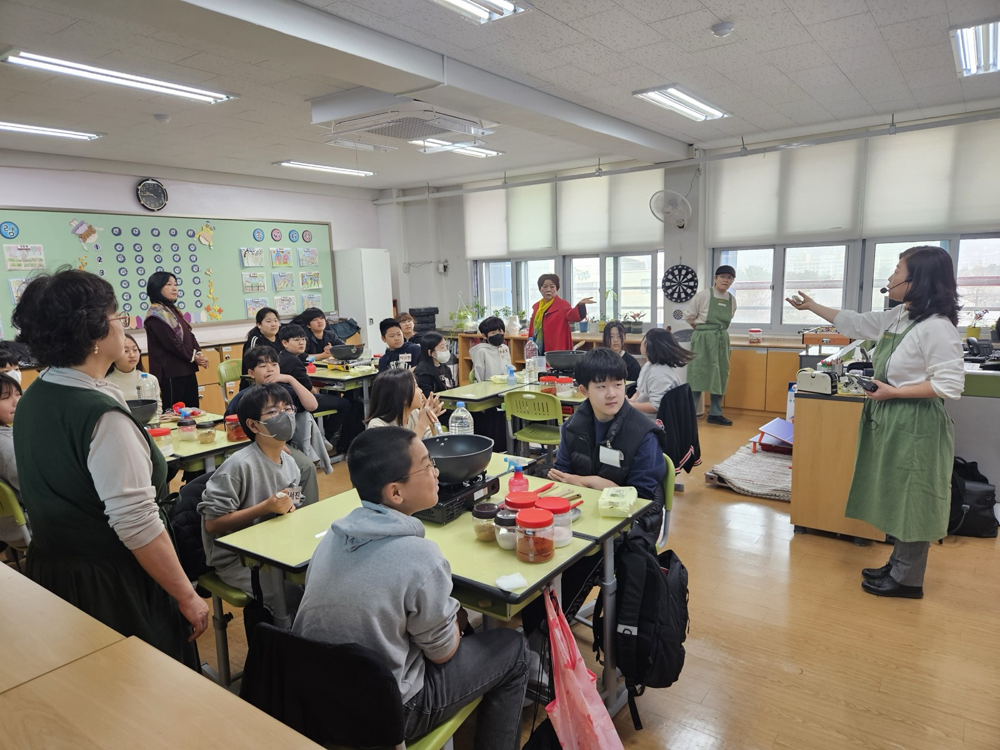

교육부 진로체험 인증기관
발효 체험학습과 강사 육성 교육프로그램 12가지를 운영하며, 수제식초 서련(瑞蓮)과 전통 장(醬)을 만듭니다.
체험학습 · 강사육성
교육프로그램
체험지도사 과정
누적 개설 기수
협동조합 설립
(11월 1일)
고령화 사회
건강 100세 목표
3대를 이은 전통발효명가 정선만장대를 비롯한 지역 파트너와 함께 건강한 식문화를 만들어갑니다.
전통발효식품협동조합은 전통발효식품의 가치를 확산하고 건강한 생활을 유지하도록 돕기 위해 설립되었습니다. 교육기부 진로체험기관 인증을 받아 청소년들에게 건강과 영양, 식습관 교육을 제공하며, 경력단절 여성과 은퇴 노인들에게 일자리를 창출합니다.
교육기부 진로체험기관 인증을 받아 유치원·초·중·고교와 방과후·자유학년제 수업에서 건강과 영양, 식습관 교육을 제공합니다.
교육을 마친 분들이 전통발효식품 강사로 활동하도록 위촉하고, 지역 기관과 연계해 실제 강의 기회로 이어지게 합니다.
발효식품 강사로 활동하며, 고령화 사회에서 건강 100세 살기를 목표로 합니다. 조합의 모든 활동이 이 목표로 모입니다.
천연 재료와 철저한 위생 관리, 그리고 실제 강의로 이어지는 교육 — 조합이 스스로 내건 두 가지 기준입니다.
천연 재료를 사용하고 철저한 위생 관리를 통해 고품질의 수제 식초와 와인을 만듭니다.
다양한 과일과 청을 활용해 독특한 맛과 향을 가진 제품을 개발하고, 소화·면역과 같은 건강 기능성을 살립니다.
발효식초 총산 4.7%(기준 4.00~20.00) — 강원특별자치도보건환경연구원 시험·검사 ‘적합’ 판정(2025.04.30).
학교·주민자치센터·복지관·문화센터 등 실제 강의 현장으로 연결되는 체험지도사 과정을 운영합니다.
우리나라 전통발효식품의 역사적 유래와 식품을 이해하고, 이를 쉽게 적용해 일자리로 이어지게 하는 데 목적이 있습니다. 12주 동안 장류부터 식초·전통주까지 직접 만들어 봅니다.

체험지도사 과정 신청, 제품 구매, 조합 참여까지 — 궁금한 점을 편히 문의해 주세요.
교육 · 제품 문의 02-855-8806 / 010-8768-9551